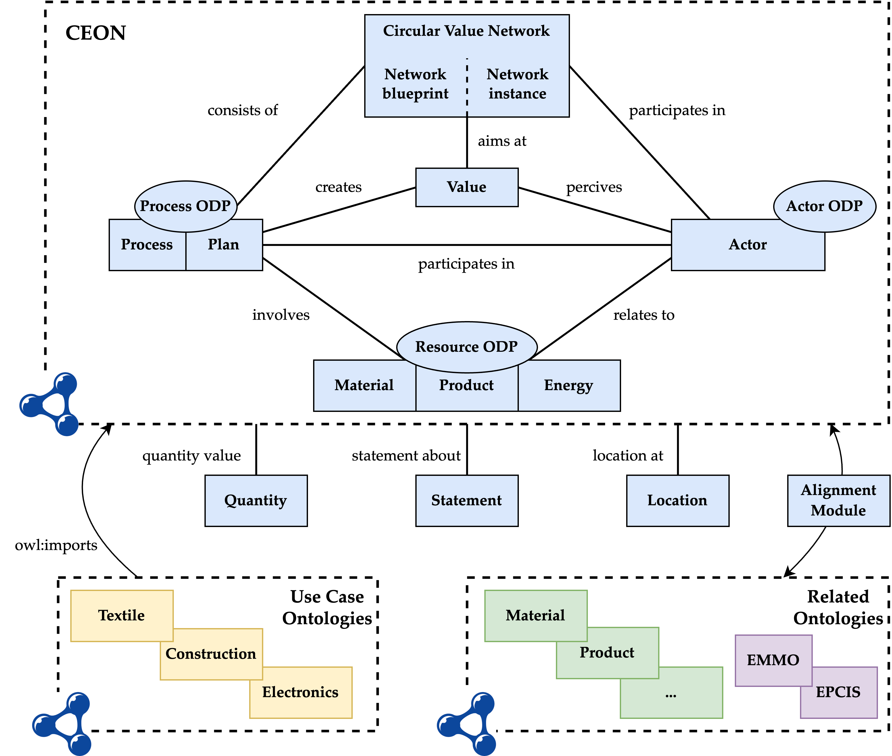

The Circular Economy Ontology Network (CEON) provides a shared vocabulary for representing information about circular economies in the form of a network of ontology modules. The figure below shows an overview of the topics covered. The lines between the boxes represent some common-sense relations between the topics, which are represented as formal relations within the actual modules, such as owl:imports or specific object properties connecting concepts inside the modules.

The set of core modules that are in this release of CEON forms a set of generic reusable ontology building blocks and include Actor, Process, Resource, and Circular Value Network.
| Ontology | Version | Serializations | Docs | License |
|---|---|---|---|---|
| actor | 0.4 | ttl rdf json-ld | html pdf | CC-BY 4.0 |
| actorODP | 0.4 | ttl rdf json-ld | html pdf | CC-BY 4.0 |
| Ontology | Version | Serializations | Docs | License |
|---|---|---|---|---|
| plan | 0.1 | ttl rdf json-ld | html pdf | CC-BY 4.0 |
| process | 0.5 | ttl rdf json-ld | html pdf | CC-BY 4.0 |
| processODP | 0.5 | ttl rdf json-ld | html pdf | CC-BY 4.0 |
| Ontology | Version | Serializations | Docs | License |
|---|---|---|---|---|
| energy | 0.2 | ttl rdf json-ld | html pdf | CC-BY 4.0 |
| material | 0.4 | ttl rdf json-ld | html pdf | CC-BY 4.0 |
| product | 0.5 | ttl rdf json-ld | html pdf | CC-BY 4.0 |
| resourceODP | 0.5 | ttl rdf json-ld | html pdf | CC-BY 4.0 |
| Ontology | Version | Serializations | Docs | License |
|---|---|---|---|---|
| cvn | 0.3 | ttl rdf json-ld | html pdf | CC-BY 4.0 |
| value | 0.3 | ttl rdf json-ld | html pdf | CC-BY 4.0 |
The following modules are supplemental to the core modules as shown in the overview figure.
| Ontology | Version | Serializations | Docs | License |
|---|---|---|---|---|
| datasheet | 0.3 | ttl rdf json-ld | html pdf | CC-BY 4.0 |
| location | 0.2 | ttl rdf json-ld | html pdf | CC-BY 4.0 |
| quantity | 0.2 | ttl rdf json-ld | html pdf | CC-BY 4.0 |
| statement | 0.2 | ttl rdf json-ld | html pdf | CC-BY 4.0 |
The following ontology file is the complete version of CEON, including both core and supplementary modules.
The use case ontologies reuse the core modules of CEON and focus on representing use case data about products' lifecycle operations.
| Ontology | Version | Serializations | Docs | License |
|---|---|---|---|---|
| construction | 0.2 | ttl rdf json-ld | html pdf | CC-BY 4.0 |
| electronics | 0.2 | ttl rdf json-ld | html pdf | CC-BY 4.0 |
| textile | 0.2 | ttl rdf json-ld | html pdf | CC-BY 4.0 |
The following ontologies are not included directly in CEON, but are reused or referenced. For instance, the Building Topology Ontology (BOT) is used in the construction use case, and the QUDT ontology is referred to in the Quantity module.
| Ontology | Version | Serializations | Docs |
|---|---|---|---|
| bot | 0.3.2 | ttl rdf json-ld | html pdf |
| qudt | 2.1 | ttl rdf json-ld | html pdf |
| qudtunit | 2.1 | ttl rdf json-ld | html pdf |
The alignment module contains results aligning CEON with relevant ontologies in the domains of circular economy (CE), sustainability, materials, manufacturing, product, logistics, and with two general ontologies.
| Source Ontology | Target Ontology | Alignment | |
|---|---|---|---|
| CEON | → | BCAO | rdf ttl tsv |
| CEON | → | BiOnto | rdf ttl tsv |
| CEON | → | CAMO | rdf ttl tsv |
| CEON | → | CEO | rdf ttl tsv |
| CEON | → | DPPO | rdf ttl tsv |
| Source Ontology | Target Ontology | Alignment | |
|---|---|---|---|
| CEON | → | BiOnto | rdf ttl tsv |
| CEON | → | BonsaiCore | rdf ttl tsv |
| CEON | → | ENVO | rdf ttl tsv |
| CEON | → | SAREF4ENVI | rdf ttl tsv |
| CEON | → | SAREF4ENVR | rdf ttl tsv |
| CEON | → | SDGIO | rdf ttl tsv |
| Source Ontology | Target Ontology | Alignment | |
|---|---|---|---|
| CEON | → | BUILDMAT | rdf ttl tsv |
| CEON | → | BWMDDomain | rdf ttl tsv |
| CEON | → | DEB | rdf ttl tsv |
| CEON | → | IOFcore | rdf ttl tsv |
| CEON | → | MAMBO | rdf ttl tsv |
| CEON | → | MATONTO | rdf ttl tsv |
| CEON | → | MDO | rdf ttl tsv |
| CEON | → | MECH | rdf ttl tsv |
| CEON | → | MPO | rdf ttl tsv |
| CEON | → | MSEO | rdf ttl tsv |
| CEON | → | MTO | rdf ttl tsv |
| CEON | → | MWO | rdf ttl tsv |
| CEON | → | PMDco | rdf ttl tsv |
| Source Ontology | Target Ontology | Alignment | |
|---|---|---|---|
| CEON | → | BWMDDomain | rdf ttl tsv |
| CEON | → | Composition | rdf ttl tsv |
| CEON | → | GPO | rdf ttl tsv |
| CEON | → | GRACE | rdf ttl tsv |
| CEON | → | IOFCore | rdf ttl tsv |
| CEON | → | MSDL | rdf ttl tsv |
| CEON | → | MSOOFM | rdf ttl tsv |
| CEON | → | ManuService | rdf ttl tsv |
| CEON | → | PSS | rdf ttl tsv |
| CEON | → | SAREF4INMA | rdf ttl tsv |
| Source Ontology | Target Ontology | Alignment | |
|---|---|---|---|
| CEON | → | BPO | rdf ttl tsv |
| CEON | → | BonsaiCore | rdf ttl tsv |
| CEON | → | GRACE | rdf ttl tsv |
| CEON | → | ManuService | rdf ttl tsv |
| CEON | → | PSS | rdf ttl tsv |
| CEON | → | UNSPSC | rdf ttl tsv |
| Source Ontology | Target Ontology | Alignment | |
|---|---|---|---|
| CEON | → | Composition | rdf ttl tsv |
| CEON | → | GPO | rdf ttl tsv |
| CEON | → | IMAMO | rdf ttl tsv |
| CEON | → | MSOOFM | rdf ttl tsv |
| CEON | → | ManuService | rdf ttl tsv |
| CEON | → | ROMAIN | rdf ttl tsv |
| CEON | → | SCOPRO | rdf ttl tsv |
| CEON | → | SCOR | rdf ttl tsv |